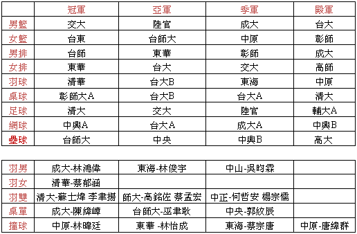
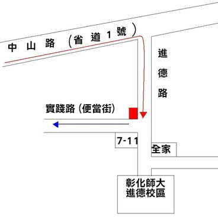
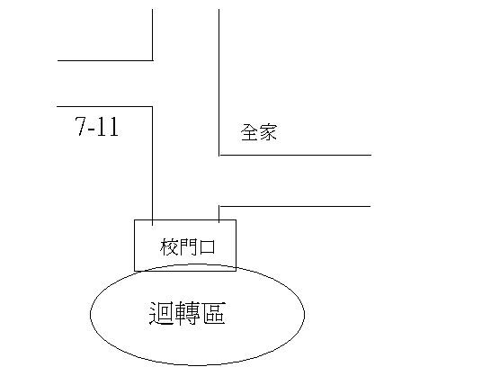

【公告】 2007 夏季大物盃名次
2007/05/28

【公告】 2007 夏季大物盃落幕
2007/05/25
本屆夏季大物盃已圓滿落幕，非常感謝大家的支持和參與！
願大家期末都 All Pass =..=
來年再見！
【公告】 新增秩序冊下載
2007/05/25
可參考檔案下載，參閱其他檔案。
【公告】 道歉啟示：秩序冊及選手證當天發放
2007/05/17
因為秩序冊及選手證的部分廠商延遲交貨，
造成無法於賽前寄發到各校。
所以秩序冊及選手證必須要當天發放。
發放時全部比賽項目除「校外比賽場地(壘球&撞球)的選手證」外都在總服務台領取。
而「壘球跟撞球」項目的選手在各自的檢錄台領取。
請各比賽球隊務必要前來領取，並在比賽前提早來領取！
造成各校不便，敬請見諒！
謝謝各位參予本次大物盃！
總服務台位置標示：

【公告】 桌球場地變更
2007/05/17
經過與學校體育室協調，桌球場地由網球館改到體育館桌球室。
桌球場地屆時會有標示，選手請依標示前往桌球場地。
【公告】 新增大物盃選手休息區
2007/05/17
學生餐廳可作為選手之休息場地。
請選手多加利用。
【公告】 賽程檔案進行更新
2007/05/04
原先賽程和章程的ｍｄｉ檔已換成ｗｏｒｄ檔格式。
造成大家的不便，敬請見諒。
為避免有的比賽隊伍連續比賽兩場，故已修改比賽場次。
有修改比賽場次及賽程的比賽有：籃球、排球、羽球、足球。
請大家前往「檔案下載」下載最新賽程檔案！
【公告】 比賽當天並無紀念衣販售
2007/05/03
因為紀念衣已無庫存，所以大物盃當天無紀念衣販售。
請各校選手見諒。
【公告】 新增接駁車時刻表（火車站、壘球場往返彰化師大）
2007/05/02
為「火車站」到「彰化師大」的接駁車；
及「彰化師大」到「壘球比賽場地」的接駁車表。
請參考檔案：「接駁車表」（ｗｏｒｄ）檔案。
【公告】 遊覽車下車補充
2007/05/02
可依下圖指引路線下車，方便司機轉彎。
紅色方塊為建議的下車地點。

【公告】 新增公車資訊（火車站往返彰化師大）
2007/05/02
請大家參考「公車資訊」（ｗｏｒｄ）檔案。
【公告】 領隊會議簡報檔及會議紀錄
2007/05/02
【公告】 新增賽程
2007/04/29
請參考「賽務資訊」的「賽程表」。
或「檔案下載」的各項比賽賽程下載。
【公告】 體育館相關規定
2007/04/26

【公告】 新增遊覽車下車注意事項
2007/04/29
ａ、敝校因為無可停大型車輛的地方，故不提供遊覽車停車位置，
請各校遊覽車司機自行找地方停車，請各校見諒。
ｂ、遊覽車可進入校門口內迴轉區下車，並且迴轉。

【公告】 停車計次（１天NT$６０）
2007/04/29
各校參賽人員若自行開車前來，
可向彰師駐警隊說明為大物盃參賽球員，或出示選手証。
可以以一天停車NT$６０元計。
【公告】 章程異動
2007/04/29
籃球(女子組)
五、比賽制度：
ｂ、六隊：六隊為一組循環，取預賽戰績最好的兩隊再進行冠軍戰，
預賽戰績第三則直接獲得季軍。
〔若有戰績相同以對戰紀錄決定，也就是若ＡＢ兩隊戰績相同，
但先前對戰是由Ａ獲勝則由Ａ隊晉級，三隊相同時以三隊之
相關球賽商率（總得分除以失分）大者為勝〕
羽球
七、比賽用球：勝利牌實用級（藍色桶）
壘球
23、如有比賽隊伍在比賽時，有使用禁棒名單上之球棒，則該場比賽就直接沒收，
由對方獲勝。是否為禁棒，以「球棒上沒有asa認證標章」為主。
裁判不會主動去抓，必須由各學校在比賽中舉發，賽後一概恕不處理。
網球
五、比賽制度：
〈三〉如遇雨或其他不可抗拒之因素則維持原賽制。
〈六〉預賽採三點制，先取得兩點者為勝，前兩點皆勝利者則第三點不用打。
〈七〉決賽採三點全打。
〈十〉循環賽記分方式：
3、三隊以上積分相同時則以敗點數（敗點數最少者晉級）、勝局數
（勝局數最多者晉級）依序做比較，至分出勝負。
九、比賽規定：
〈一〉比賽當天請在開賽前10分鐘填妥出賽名單並交至紀錄台，違者視同棄權。
工作人員會在比賽前10分鐘、前五分鐘、比賽前一分鐘各唱名一次，
共唱名三次，經工作人員第三次唱名還尚未繳交出賽名單之隊伍，同棄權論。
此次將嚴格執行，請各隊注意。
〈三〉比賽逾時五分鐘未出場比賽者視同棄點。然得經由雙方同意協調變更出點順序，
但各點比賽時間逾時五分鐘未出賽者人視同棄點。
〈六〉若比賽進行時球不甚打到天花板彈回來，則該球判定為對方得分。
十、申訴：
〈一〉有關競賽場所發生的問題(含運動員資格問題)，必須在該場比賽結束後30分鐘內
提出，經隊長向大會賽務組提出。
〈二〉若遭其他隊伍檢舉球員為槍手，則該球員將禁止參加任何比賽，該球隊已勝利
場次則為敗場。
撞球
六、獎勵：冠軍獎金3000元
亞軍獎金2000元
季軍獎金1000元
殿軍獎金500元
並附獎盃予前四名之選手。
【公告】 新增隊伍統計表
2007/04/12
於「賽務資訊」新增「隊伍統計」表。
【公告】 報名匯款及紀念衣訂購延期
2007/04/10
報名匯款延至４/１３（五）。
紀念衣訂購延至４/１４（六）。
紀念衣匯款延至４/２０（五）。
請各校盡量配合準時繳交，謝謝。
【公告】 隊伍報名截止
2007/04/10
隊伍報名已經截止。
謝謝各校的踴躍報名。
【公告】 領隊會議時間與地點
2007/04/10
領隊會議會議於４/２２（日）下午１：００。
在彰化師範大學物理系館一樓８１１階梯教室舉行。
已寄發領隊會議邀請函至各校，邀請函內有本次會議的內容。
誠摯邀請各校出席會議。
【公告】 壘球章程異動
2007/03/29
新增第２２條。
「22. 為避免危險，球員不得穿著金屬釘鞋（塑膠釘可），一經發現取消該名球員上場資格。」
【公告】 紀念品專區
2007/03/28
新增「唯物主彰」紀念衣樣式和訂購說明。
並在「檔案下載」新增紀念衣訂購單和SIZE表。
【公告】 各項比賽報名費異動
2007/03/27
新增「撞球個人賽」報名費＄２５０。
因為桌球室無法使用，導致網球練習場地（一個網球場）要給桌球使用。
所以決定將「網球報名費」從＄２３００降到＄２１００。
所有比賽項目報名費用如下：

【公告】 公告報名費匯款帳號
2007/03/25
郵局匯款（郵局代碼：７００）
戶 名：彰師大物盃唯物主彰
局 號：００８１１４６
帳 號：０１３５６２９
報名費匯款詳細方法請見「報名費匯款」。
【公告】 排球、桌球場地異動
2007/03/24
桌球比賽場地改為彰化師大 網球館內的桌球區。
排球比賽場地改為彰化師大 體育館內、網球館內。
【公告】 撞球章程異動
2007/03/24
大家好，對於這次撞球賽程給大家造成的困擾說聲抱歉。
有鑑於板上大家回覆的文章，對於團體賽的賽制大家是抱比較反面的意見。
我們決議把賽制改回原本的個人賽。
關於團體賽的部份，也麻煩各學校的撞球選手提供意見。
在領隊會議（日期稍後公佈）上我們會提給大家投票，為下一屆的主辦學校作準備。
也對大家說聲抱歉，如有問題還請盡量在討論區ｐｏ文章提出。
預祝大家都能在比賽上有好的成績！
彰化師大「唯物主彰」大物盃-總負責人 楊富欽
【公告】 各項作業截止日期
2007/03/23
「隊伍報名」截止日期：４/３
「選手資料報名」截止日期：４/８
「報名費匯款」期間：３/２６～４/８
詳情請參考「網路作業」。
有任何疑問請「聯絡我們」。
【公告】 各校聯絡人資料
2007/03/20
請各校負責人盡速寄發２位聯絡人手機及ｍａｉｌ到大物盃專用信箱：
ncuephys2007@gmail.com
以方便主辦單位事項連絡各校的聯絡人。
目前有寄發的學校名單已經ＰＯ在討論區「線上報名專區」。
請已經寄發的學校進行確認，謝謝大家。
如有任何疑問或指教請 聯絡我們 。
【公告】 新增各項比賽報名費用
2007/03/20
新增各項比賽報名費用在「網路作業」的「報名費用匯款說明」。
或可參見下表：
各項比賽報名費，近日內可能進行微調。
謝謝大家配合。
【更正】 使用「討論區」進行網路報名
2007/03/19
各校負責人使用討論區進行隊伍報名時，請各負責人直接進入「線上報名專區」。
不用申請帳號，直接以 教學方式 進行隊伍報名。
隊伍報名後我們會連絡各校寄到大物盃專用信箱的聯絡人，進行確認工作。
【公告】 使用「討論區」進行網路報名
2007/03/18
請各校代表或總負責人儘速至「討論區」註冊自己的帳號，並完成ｐｏ文報名。
最晚請在「４/３前」完成作業，以便我們進行統計。
報名費用匯款期間在「３/２６～４/８」。
詳細的操作辦法請參閱 網路作業 。
如有任何疑問或指教請 聯絡我們 。
【公告】 2007 夏季「唯物主彰」大物盃 in NCUE
2007/03/01

今年夏季「唯物主彰」大物盃在５/１９～５/２０於國立彰化師範大學舉行。